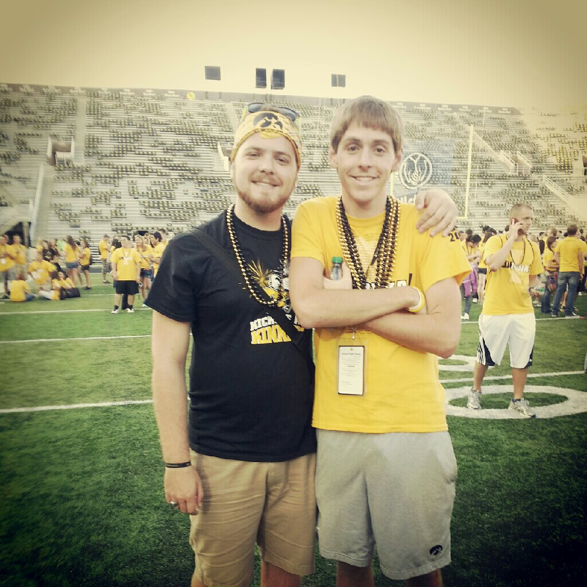
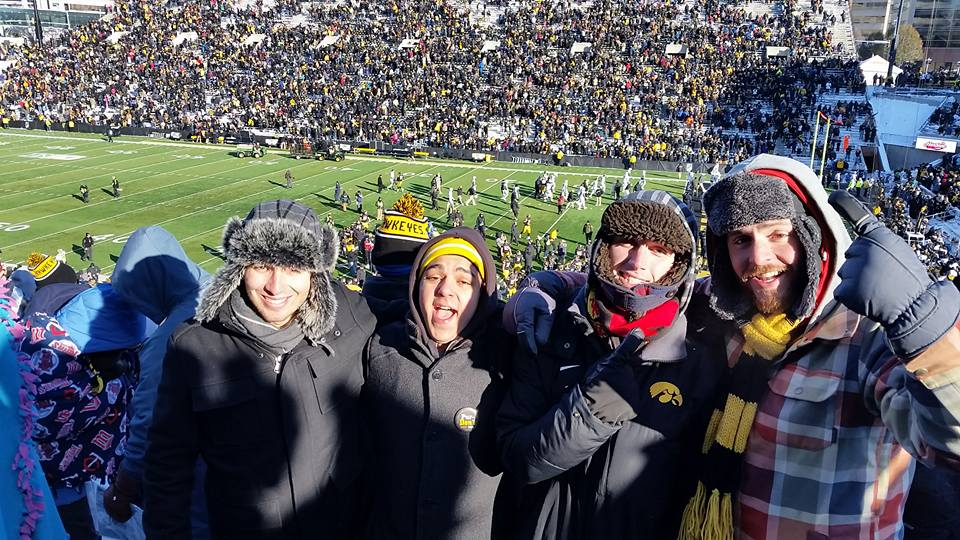

If you wish to view my resume click the following link (resume.html) to view.
About Me:
Currently a senior at the University of Iowa with a double major in Business Analytics and Information Systems and Marketing, I've developed an interest in the structures of databases behind succesful marketing campaigns. Graduating next December, I hope to utilize this upcoming summer to further develop the hard skills that I need to become succesful in such an ever developing industry.
How I got where I am today:

This is a photo of my first day of orientation at Iowa. The person in black is my older brother, who just so happened to be my orientaion leader.
Having been born in the sunny state of California, I was not always a midwestern. In fourth grade my family relocated to a small town in France named Olivet, where we were to stay for the next three and a half years. Speaking very little French at the time, it was difficult to interact with my fellow peers. It was during this phase I developed the desire to learn how to use computers as a means to an end. I had recieved a lego mindstorms set and I remember the first application I ever developed was for a little robot to shoot foam balls at an intruder when they were to enter my room.

I'm grateful that Iowa gave me so many opportunities to take adventures. Whether it's through athletics, academics, or the many activities you offer, there were always things, places, and ideas to explore!
After moving back to the United States, I took an interest in art. Specifically videography and photography. I began to make stop motion animiation films and enrolled in all the classes that my high school had available, including broadcast journalism. It was here where I first began to contimplate areas of study for my ever approaching college career. I chose to enter with a double major in Journalism and Cinematgraphy, taking computer programming
classes my freshmen year as elective courses. The next year I began taking electives in the Tippie College of Business related to Marketing. I had never considered business school, but these electives opened my eyes to that fact that business was much more than what it appears.
I slowly began taking more Marketing classes and declared at the start of my Junior year. However, after an internship with AEGON Global Technologies, I became aware of the importance of big data in the world of Marketing, so to increase my hard skills in this area, I have decided to attend the University of Iowa one extra semester in order to graduate with dual degrees in Business Analytics and Information Systems as well as Marketing.
When I graduate next December, I hope to find a job where I can apply the knowledge that I have gained throughout both my internship at AEGON as well as from the Tippie School of Business. I am also in the process of looking for something to do this summer, wheather it's an internship, part-time job, or a non conventional option, where I can further develop the skills neccesary to tackle my final semester at the University of Iowa.